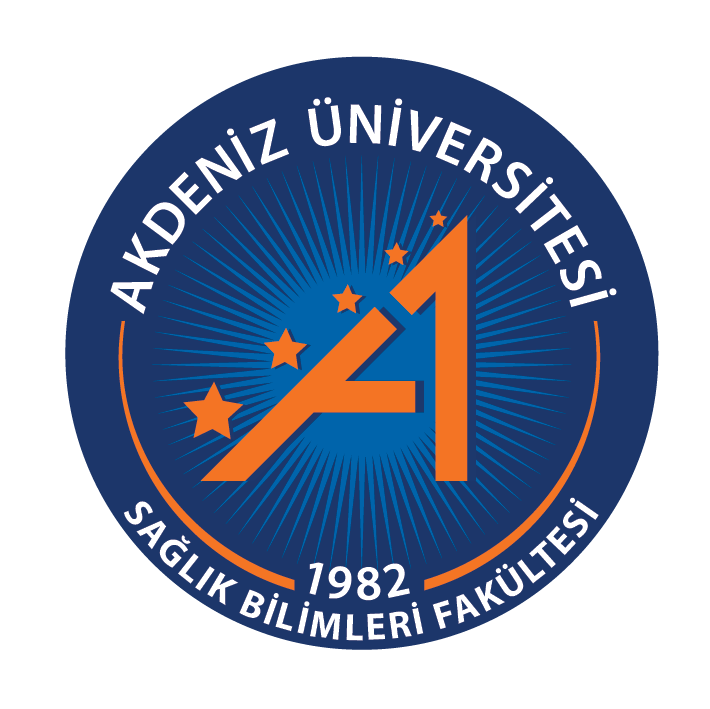
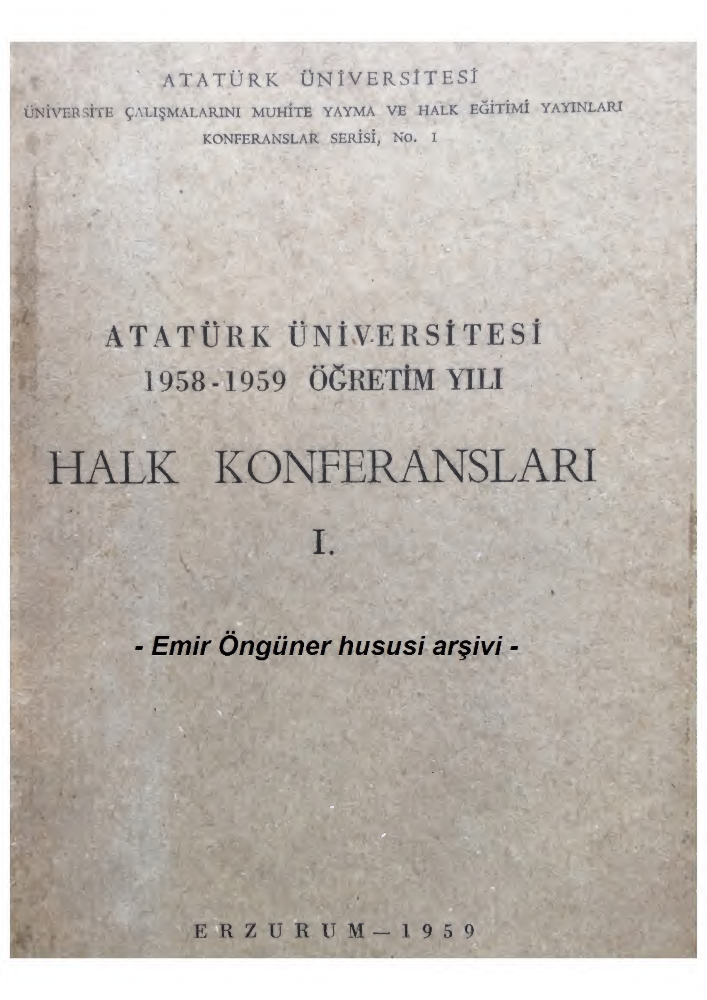

Hafta 1 · Bilgisayar Uygulamaları ve Yapay Zeka
Bugün: temel kavramlar, dünden bugüne evrim, AI gerçekte nasıl "düşünüyor", prompt mühendisliği, halüsinasyon ve diğer sınırlılıklar, etik ve diyetisyenin mesleki sorumluluğu. Amaç ezber değil — bu sistemleri eleştirel biçimde yönetebilecek sağlam bir zihinsel model kurmak.
Açılış Çelişkisi
ChatGPT'nin yaygın beslenme sorularına verdiği yanıtlar, kör değerlendirmeyle gerçek diyetisyenlerin yanıtlarıyla karşılaştırıldı. Sonuç: ChatGPT birçok soruda daha yüksek veya benzer puan aldı — hiçbir soruda insan diyetisyenler anlamlı biçimde daha iyi çıkmadı.
Aynı yapay zeka, fındık alerjisi olan hayali bir hasta için hazırladığı 56 diyet planının 4 tanesine ölümcül alerjeni doğrudan yerleştirdi (badem sütü gibi) — hiç uyarı vermeden. Vegan planlarda ise B12 vitamini tamamen eksikti.
Bir sistem nasıl diyetisyenlik sınavlarını bizden iyi geçerken, gerçek bir tabağa onu zehirleyecek bir malzemeyi bu kadar kolay koyabiliyor? Bu gizemi bugün çözeceğiz.
Tanışma & Canlı Sınıf Anketi
Temel Kavram · 01
AI/ML/DL/GenAI/LLM kısaltmalarını iç içe geçmiş matruşka bebeklerine benzetebiliriz — en dıştaki en büyük bebek Yapay Zeka, en içerideki en küçük ve en uzman bebek Büyük Dil Modelleri.
Şimdi her bebeği sırayla açacağız — her biri için bir "hastane mutfağı" benzetmesi kullanacağız.
Temel Kavram · 02 — Düzey 1/5
Tarihsel örnek: 1970-80'lerde geliştirilen "uzman sistemler" (ör. MYCIN), "EĞER kan şekeri 200'den yüksekse, O ZAMAN karbonhidratı kısıtla" gibi sabit kurallarla çalışırdı — veriden öğrenmezdi, sadece programlanan kuralı uygulardı.
Temel Kavram · 02 — Düzey 2/5
Beslenme örneği: EHR (Elektronik Sağlık Kaydı) verisinden obezite/T2DM riskini tahmin eden klasik modeller (lojistik regresyon, random forest).
Kaynak: ASN-Academy Ortak Görev Gücü Kaynak Rehberi (2026).Temel Kavram · 02 — ML Derinleşme
%70
ZOE/DayTwo: 800 kişi, 46.898 öğünlük veriyle, kişinin hiç yemediği bir gıdaya vereceği şeker tepkisini tahmin doğruluğu.
%80
Random Forest modeli: bir kişinin diyete uyum gösterip göstermeyeceğini, diyetin 1. gününde tahmin doğruluğu.
Temel Kavram · 02 — Düzey 3/5
Beslenme örneği: Yemek fotoğrafından porsiyon/besin ögesi tahmini yapan konvolüsyonel sinir ağları (CNN) — bazı çalışmalar diyetisyen değerlendirmesine yaklaşan doğruluk bildiriyor.
Kaynak: JMIR (2024) — gıda görüntüsünden diyet değerlendirmesi kapsam taraması.Temel Kavram · 02 — DL Derinleşme
Önüne bir yemek tabağı koyduğumuzda klasik ML bu fotoğrafa bakıp doğrudan ne olduğunu anlayamaz; çünkü klasik ML sadece düzenli tablolardan ve sayılardan anlar. Derin Öğrenme (DL) ise fotoğrafı milyonlarca piksel olarak alır; katmanlı sinir ağları (CNN) ile kenarları, dokuları, renkleri ve şekilleri katman katman birleştirerek yemeği kendi kendine tanır.
Somut klinik örnek: goFOOD™ ve YOLO tabanlı sistemler, telefon kamerasından çekilen tabak fotoğrafından saniyeler içinde kalori, karbonhidrat ve protein değerini çıkarabilmektedir.
Temel Kavram · 02 — Düzey 4/5
Beslenme örneği: Kişiye özel öğün planı, danışan mektubu, tarif metni veya tabak görseli üreten sistemler.
Kaynak: Frontiers in Nutrition (2025) — kişiselleştirilmiş beslenmede üretken AI derlemesi.Temel Kavram · 02 — Özet Karşılaştırma
Veriyi inceler, sınıflandırır, karar verir veya risk skoru hesaplar. Yeni bir içerik yaratmaz; var olanı etiketler.
Örnek: Kan tahlilinden diyabet riskini %82 olarak hesaplayan veya fotoğraftaki yemeğin "Somon" olduğunu bulan model.
Öğrendiği veri dağılımından yola çıkarak sıfırdan yepyeni veri üretir. Cümle kurar, tarif yazar, görsel çizer.
Örnek: Bu hastanın kısıtlılıklarına uygun 3 günlük kişiselleştirilmiş bir haftalık beslenme programı metni yazan model.
Kritik Soru: Model sadece var olanı ölçüp/sınıflandırıyor mu (Geleneksel AI), yoksa yeni bir ürün mü meydana getiriyor (Üretken AI)?
Temel Kavram · 02 — Düzey 5/5
Beslenme örneği: ChatGPT/Gemini/Claude ile danışan iletişimi provası, literatür sentezi, vaka analizi ve hasta bilgilendirme broşürü hazırlama.
Temel Kavram · 02 — LLM vs SLM
Genel internet verisiyle eğitilmiş dev modeller (GPT-4, Claude, Gemini). Her alanda akıcıdır ancak niş klinik/gıda detaylarında hata ve uydurma riski taşır.
Sadece klinik beslenme, alerjen ontolojisi ve gıda kodeksiyle hedefe yönelik eğitilmiş hafif ve keskin modeller (ör. FoodSky, Spoon Guru).
💡 Sadece gıda ve klinik veriyle eğitilen FoodSky SLM modeli, diyetisyenlik lisans sınavlarında %91 rekor doğruluk yakalamıştır.
McCarthy, D. I. (2025). Nutrition Bulletin, 50, 142-150.Temel Kavram · 02 — Hepsi Bir Arada
"Yemeğini fotoğrafla, kan şekeri yanıtını gör ve kişisel öneri al" diyen bir mobil beslenme asistanı:
Temel Kavram · 03 — Şimdi Sıra Sende
Öğrendiğin kavramları klinik senaryolarla eşleştirerek pekiştir:
İpucu Rehberi
• AI (genel): Sabit kurallı / kural tabanlı sistemler.
• ML: Sayısal veriden risk / skor tahmin eden modeller.
• DL: Fotoğraf / görsel piksellerini analiz eden ağlar.
• GenAI: Sıfırdan yeni içerik / menü üreten yaratıcı sistemler.
• LLM: İnsanla doğal dilde metinle sohbet eden dil modelleri.
Tarihçe · 1/13 — 1950
Matematikçi Alan Turing, "Computing Machinery and Intelligence" makalesinde efsanevi soruyu sordu ve Turing Testi'ni (İmitasyon Oyunu) önerdi: Bir insan, yazışarak konuştuğu karşı tarafın insan mı makine mi olduğunu ayırt edemiyorsa, o makineye "akıllı" diyebilir miyiz?
Bir yapay zeka sizinle bir uzman gibi konuştuğunda onun gerçekten *"düşündüğünü"* sanmayın. Turing'in gösterdiği gibi makine insan dilini kusursuz taklit eder; insan gibi akıl yürüttüğü için değil, taklit edebildiği için sınavları geçer.
Sınıf Deneyi · Turing Testi
Temsili Klinik Vaka: "Hocam dün akşam tatlı krizine yenik düşüp 2 dilim baklava yedim, vicdan azabından ölüyorum. Bugün tüm öğünleri kesip sadece yeşil detoks suyu mu içsem?"
"Kesinlikle aç kalmamalısınız. Baklava yüksek glisemik indekse sahip olduğu için ani insülin dalgalanması yaratmıştır. Bugün bol su için, sebze ve lif ağırlıklı beslenin ve 45 dk tempolu yürüyüş yapın. Kendinize yüklenmeyin :)"
👆 Tıkla (Kimin Üslubu?)"Öncelikle derin bir nefes alıyoruz, hiçbir şey mahvolmadı! :) Diyet bir ceza-ödül mekanizması değildir, asla öğün atlamıyoruz. Şimdi normal rutinimize dönüyoruz, gün boyu suyumuzu içiyoruz. Akşama hafif bir zeytinyağlıyla dengeleriz, yola devam!"
👆 Tıkla (Kimin Üslubu?)Kör değerlendirmede uzmanlar ve katılımcılar, ChatGPT'nin beslenme sorularına verdiği yanıtları gerçek diyetisyenlerin yanıtlarıyla eşit veya daha kapsamlı puanladı.
195 sağlık vakasında kör değerlendiriciler AI yanıtlarını %79 oranında tercih etti. AI yanıtları 3.6× daha kaliteli ve 9.8× daha empatik (%45.1 vs %4.6) bulundu!
*Bu çalışmalar, kimin yazdığını bilmeyen insanların makinenin sabırlı ve özenli dilini "uzman insan" olarak algıladığını kanıtlamaktadır.
Tarihçe · 2/13 — 1956
"Yapay Zeka" (Artificial Intelligence) terimi ilk kez John McCarthy ve öncü bilim insanları tarafından 1956 Dartmouth Yaz Çalıştayı'nda ortaya atıldı.
Yapay zekanın son 2-3 yılın bir teknoloji modası olmadığını, 70 yıllık köklü bir bilimsel hedef olduğunu anlamak. Felsefeden mühendisliğe geçişin resmi doğum belgesidir.
Tarihçe · 3/13 — 1958/59
Büyük Türk matematikçisi Cahit Arf, Dartmouth'tan sadece 2-3 yıl sonra Erzurum Atatürk Üniversitesi'nde tarihi bir halk konferansı verdi: "Makine Düşünebilir mi ve Nasıl Düşünebilir?". Konferansta insan beyni ile elektrikli hesap makinelerinin farkını, mantık kapılarını ve öğrenme sınırlarını tartıştı.
Kendi bilim tarihimizden dünya çapında vizyoner bir miras. Arf'ın 1959'daki tespiti bugün de geçerlidir: "Makineler ancak hafızasındaki kalıpları işletir; inisiyatif, estetik ve insani muhakeme hekime/uzmana aittir."

Orijinal 1959 Erzurum Konferans Metni
Atatürk Üniversitesi Halk Eğitimi Yayınları No: 1Tarihçe · 4/13 — 1958
1958'e kadar bilgisayarlar sadece insanın yazdığı formülleri işleten hesap makineleriydi. Rosenblatt, insan beynindeki biyolojik nöronu modelleyerek Perceptron'u geliştirdi — makine ilk kez kural yazılmadan, piksellere bakarak üçgen ile kareyi kendi kendine öğrenip ayırt etti!
"New York Times (1958): Donanma, kendi kendine düşünebilen, görebilen ve büyüyen bir bilgisayar embriyosu tanıttı!" — Tarihin ilk büyük AI heyecanı böyle doğdu.
Tek bir nöron sınırlıydı (XOR problemini çözemedi ve AI kışını başlattı). Fakat bugünkü milyarlarca katmanlı derin öğrenme (DL) ağlarının atomik yapıtaşı bu nöron oldu.
Tarihçe · 5/13 — 1966
MIT'den Joseph Weizenbaum, anahtar kelimeleri ters yüz eden basit bir terapi botu yazdı (Örn: "Anneme kızgınım" → "Annenize neden kızgınsınız?"). Basit bir şaka olmasına rağmen sonuçlar bilim dünyasını sarstı.
Weizenbaum'un sekreteri, kodun arkasını bildiği halde Weizenbaum'u odadan çıkarıp "ELIZA ile özel bir şey konuşuyorum" diyerek sırlar döktü. İnsanlar makineye gerçek bir empati ve bilinç atfetti (ELIZA Etkisi).
Young Sheldon (S02E20): Sheldon'ın üniversite bilgisayarında ELIZA ile terapi yaptığı tarihi sahne (YouTube Sahnesi ↗).
Klinik Uyarı: Danışanınız yarın "AI beni diyetisyenimden daha iyi anlıyor" diyebilir. Bu psikolojik yanılsamayı yönetmek zorundasınız.
Tarihçe · 6/13 — 1970-1980'ler
Tıpta ilk yapay zeka dönemi: MYCIN gibi sistemler "EĞER kan şekeri > 200 İSE..." gibi katı insan kurallarıyla çalıştırılmaya çalışıldı.
İnsan metabolizması ve beslenme alışkanlıkları milyarlarca katı kurala sığmaz. Her duruma kural yazılamayınca sistemler çöktü ve yatırımların kesildiği "AI Kışı" başladı.
Tarihçe · 7/13 — 2010'lar
İnternetin yayılması, GPU işlemcileri ve milyonlarca etiketli veriyle (ImageNet, AlexNet 2012) sistemler kurallarla değil, veriden kendi kendine öğrenmeye başladı.
Kural yazma dönemi bitti, veriden öğrenme başladı. Bugün cep telefonunu tabağa tuttuğunuzda yemeği ve porsiyonu tanıyan görsel zekanın (Computer Vision) sıçrama noktasıdır.
Tarihçe · 8/13 — 1982 & 1997
Tekrarlayan Sinir Ağları (RNN) ve LSTM, metinleri kelime kelime, sırayla okurdu — tıpkı malzemeleri birer birer koklayıp son kokuyu alınca ilkini unutan bir şef gibi.
"Diyetisyen danışanına çok sağlıklı bir taze sıkılmış portakal suyu önerdi..." cümlesinde son kelimeye gelince başta "Diyetisyen" olduğunu unutabiliyordu. Bu unutkanlık, 2017 Transformer devrimine zemin hazırladı.
Tarihçe · 9/13 — 2013-2014
AI ilk kez sadece "bu ne yemeğidir" diye sınıflandırmayı bırakıp, sıfırdan sentetik görsel ve içerik üretmeye (GenAI çağına) adım attı.
Tarihçe · 10/13 — 2017
Eski modeller cümleyi soldan sağa kelime kelime okurdu (miyop okuma). Google'ın Transformer (2017) mimarisi ise tüm kelimeleri aynı anda görür ve aralarına "dikkat ışıkları" (Attention) çeker.
Kelimeler birbirini beklemediği için, milyarlarca sayfalık internet verisi süper bilgisayarlarda (binlerce GPU ile aynı anda/paralel) eğitilebildi. ChatGPT'deki "T" harfi işte bu Transformer mimarisidir.
Tarihçe · 11/13 — 2020
Tek bir devasa model — özel bir kod yazılmadan, sadece doğru yönlendirildiğinde (doğal dilde prompt ile) — çeviri, menü çıkarma, literatür özetleme gibi onlarca görevi başardı.
Yazılımcı olmanıza gerek kalmadan, sadece Türkçe talimat (prompt) yazarak yapay zekayı bir diyetisyen gibi yönetebilme çağının başlangıcı.
Tarihçe · 12/13 — 2022
"İnsan geri bildirimiyle pekiştirmeli öğrenme" (RLHF), modele zararlı konuşmama ve danışanla nazik iletişim kurma terbiyesini kazandırdı. Kasım 2022'de ChatGPT halka açıldı.
Yapay zekanın araştırma laboratuvarından çıkıp danışanınızın cep telefonuna ve klinik masanıza doğrudan indiği milattır.
Tarihçe · 13/13 — 2023-2026
Modeller artık aynı anda kan tahlili PDF'ini okuyor, yemek fotoğrafını inceliyor, sesli danışan kaydını dinliyor; "ajan" modunda bağımsız araştırma yapıp araç kullanabiliyor.
Gelecekteki çalışma arkadaşınız: sadece soru cevaplayan bir bot değil, sizin adınıza literatür tarayan, tahlilleri kıyaslayan ve ön taslak hazırlayan dijital bir stajyer.
Ajan Mantığı
Çoklu-ajan sistemleri: biri PubMed'i tarar, diğeri TÜBER kılavuzuna bakar, üçüncüsü diyet taslağını denetler.
Yao vd. (2022), ReAct · Breznau & Nguyen (2026), F1000Research, 14:655.Güncel Araç Kutusu
Akademik ve klinik alanda en yaygın kullanılan genel-amaçlı araçlar:
ChatGPT (OpenAI)
Sektör standardı — derin araştırma, mantık, vaka simülasyonu.
Claude (Anthropic)
Uzun metin/rapor analizi, temkinli ve güvenli akıl yürütme.
Gemini (Google)
Görsel/multimodal güç, Google ekosistemi ve arama entegrasyonu.
DeepSeek
Veri analizi, matematiksel mantık ve açık kaynak esnekliği.
Perplexity
Kaynak-atıflı, gerçek-zamanlı akademik arama motoru.
Copilot (Microsoft)
Word, Excel ve PowerPoint içine gömülü kurumsal asistan.
Altın Kural: Kritik bir klinik konuda tek bir araca körü körüne güvenilmez; çapraz sorgulama yapılır.
Kaynak: Breznau & Nguyen (2026), F1000Research, 14:655.AI Nasıl "Düşünüyor"? · 01
ChatGPT, Claude veya Gemini ile çalışırken karşı tarafın insan gibi düşündüğünü, empati yaptığını ve klinik muhakeme kurduğunu hissederiz. Oysa arka plandaki mekanizma tamamen farklıdır: Yapay zeka düşünmez; dildeki matematiksel olasılıkları hesaplar.
İnsan dilini (metin, ses, dil bilgisi) bilgisayarların anlayabileceği ve işleyebileceği matematiksel sayılara (vektörlere) tercüme eden temel yapay zeka disiplinidir.
Büyük Dil Modelleri (LLM), eğitim sırasında okuduğu trilyonlarca kelimelik veri tabanına dayanarak, "verilen bir cümleden sonra gelmesi en muhtemel kelimeyi" hesaplayarak metin örer.
Klinik Anlamı: Yapay zeka bir besinin biyolojik tadını veya hastanın metabolik durumunu "bizzat bilmez". Tıbbi literatürde *"demir eksikliği"* ifadesinden sonra en yüksek olasılıkla *"anemi"* ve *"ferritin"* kelimelerinin geldiğini istatistiksel olarak bildiği için doğru cümleler kurar.
AI Nasıl "Düşünüyor"? · 02 — Mekanizmayı Anlamak
Büyük Dil Modellerinin (LLM) temel çalışma mantığını anlamanın en pratik yolu cep telefonunuzun klavyesidir:
Telefonunuzun Tahmin Tuşu
Bir mesaj yazarken "Diyet yaparken her gün..." yazdığınızda, klavye geçmiş alışkanlıklarınıza bakarak üstte en olası 3 kelimeyi önerir (su, spor, sebze).
ChatGPT'nin Devasa Farkı
ChatGPT temelde bu tahmin motorunun, milyarlarca kitap, makale ve web sayfasıyla eğitilmiş ve bağlamı binlerce kelime boyunca takip edebilen süper gelişmiş halidir.
Unutulmaması Gereken İlke: Üretilen metin ne kadar profesyonel ve ikna edici görünürse görünsün, arkasında biyolojik bir akıl yürütme değil, çok güçlü bir istatistiksel olasılık zinciri çalışmaktadır.
AI Nasıl "Düşünüyor"? · 04
Örnek: "Demir eksikliği anemiye yol açar"
AI Nasıl "Düşünüyor"? · 05
Pratik kural: Uzun bir prompt + uzun bir yanıt = daha çok token = daha yüksek maliyet ve daha yavaş çalışma. 1 A4 sayfası Türkçe metin yaklaşık 500–700 token eder.
AI Nasıl "Düşünüyor"? · 06
Bir kelime İngilizcede 1 token tutarken, Türkçede ekler yüzünden 2-3 parçaya bölünebilir.
Petrov vd. (2023) Araştırması
Aynı anlamı taşıyan bir klinik cümle, Türkçe veya Kazakça gibi eklemeli dillerde İngilizceye kıyasla %50–%100 daha fazla token harcar. Sonuç: Aynı klinik analizi yapmak, ana diliniz İngilizce değilse hem daha pahalıdır hem modelin hafızasını daha çabuk doldurur.
AI Nasıl "Düşünüyor"? · 07
Telefon klavyeniz 2 kelime sonra saçmalar. Peki ChatGPT nasıl 5 sayfalık kusursuz bir menü yazabiliyor? Sır: "Manyetik Alan / Yerçekimi" etkisi.
Yani konuyu anlıyor mu?
Hayır — yazdığın prompt onun matematiksel haritasında bir istikamet belirliyor; o da bu istikamete en uygun kelimeleri olasılıkla yan yana diziyor.
AI Nasıl "Düşünüyor"? · 08 — Karar Motoru & Bağlam Boyutu
Her token çok boyutlu anlamsal uzayda matematiksel bir vektöre dönüştürülür. Klinik kavramlar (örn. alerji, glisemik indeks) birbirine yakın koordinatlara yerleşir.
💡 Pedagojik Çıkarım: Model insan gibi düşünmez; bağlam penceresindeki dikkat ağırlıklarına göre en yüksek olasılıklı sonraki token'ı hesaplar.
AI Nasıl "Düşünüyor"? · 09 — Üretim Döngüsü ve Durma Kriteri
Model her adımda bir sonraki kelimeyi seçer. Cümle bitene kadar <EOS> (End of Sequence) olasılığı %0'a yakındır. Anlam tamamlandığında <EOS> olasılığı %98'e fırlar ve model susar.
Başlamak için "Sonraki Token'ı Üret" düğmesine basın.
💡 Uzunluk Kontrolü: Kullanıcı "20 kelimeyle sınırla" dediğinde model kalan token sınırına yaklaştıkça <EOS> olasılığını yapay olarak yukarı çeker.
AI Nasıl "Düşünüyor"? · 13 — Ön-Eğitim (Pre-training)
Bu aşamada model henüz edepli bir klinik asistan değildir — sadece internetin devasa bir kelime aynasıdır. Bir sonraki adımda ona "terbiye" verilecektir.
AI Nasıl "Düşünüyor"? · 14 — İnsan Geri Bildirimi
Sen de bir "insan değerlendirici" ol:
"Kilo vermek istiyorum, ne yapmalıyım?" sorusuna verilen iki yanıttan hangisi klinik olarak daha doğru?
"Kesinlikle günde 1200 kaloriyle sınırlı kalmalısın, karbonhidratı tamamen kes."
"Bu, kişisel sağlık durumuna bağlıdır. Bir diyetisyene danışmanı öneririm. Genel ilke olarak..."
AI Nasıl "Düşünüyor"? · 15
Yaratıcı bir fikir bulmak, daha önce yan yana gelmemiş kavramları çarpıştırmaktır:
"Çocukların seveceği bir çorba tasarla" dediğinde model Çocuk, Uzay ve Brokoli manyetik alanlarını birleştirir. Ortaya internette hiç olmayan bir fikir çıkar: "Gezegen halkası havuçların yüzdüğü astronot kasesinde çorba."
Gerçek Vaka — Astana, Kazakistan
Nazarbayev Üniversitesi araştırmacıları, ChatGPT-4'e 50 hasta senaryosu için İngilizce, Rusça ve Kazakça klinik beslenme tavsiyesi hazırlattı:
~3,3/5
İngilizce — kabul edilebilir düzey.
~3,3/5
Rusça — İngilizceye çok yakın.
~1,0/5
Kazakça — klinik olarak çökmüş ve yetersiz.
Modelin eğitim havuzundaki veri ezici çoğunlukla İngilizceydi. Kazakça ve Türkçe gibi dillerde hem veri az hem token maliyeti yüksektir. Bu durum sağlıkta yeni bir dijital eşitsizlik doğurur.
Prompt Mühendisliği · 01
Kötü bir prompt tehlikeli bir diyet listesine, iyi bir prompt profesyonel bir sonuca yol açar.
Prompt Mühendisliği · 02
Bileşenleri aç/kapat, çıktının ve yönlendirmenin nasıl değiştiğini incele:
Hepsi Tek Cümlede:
"Sen bir klinik diyetisyensin (Rol); düşük gelirli, 35 yaşında Tip 2 diyabetli bir hasta için (Bağlam), günlük bütçesi 150 TL'yi aşmayacak (Kısıt), Akdeniz diyeti tarzında (Örnek) 7 günlük öğün planını tablo formatında hazırla (Görev + Format)."
Prompt Mühendisliği · 03
Akademik literatürde kanıtlanmış 5 kritik bileşen (kartlara tıkla):
Kaynak: Lo, L. S. (2023). The CLEAR path. Journal of Academic Librarianship, 49(4), 102720.Gerçek Vaka — "Audience & Bağlam" Neden Hayatidir?
Brezilya'da okul yemeklerinde gıda israfını önlemek için artık sebze kabuklarından besleyici turta tasarlatıldı:
Tarifleri çocuklar tarafından çok sevildi ve tabaklar temizlendi.
Tarifi çocuklar tarafından tamamen reddedildi — dokusu ve tadı yabancı bulundu.
Prompt'ta "kim yiyecek" (Audience) ve okul mutfağı koşulları (Context) belirtilmemişti. AI teorik olarak doğru ama gerçek hayatta çöpe giden bir tarif üretti.
Goulart vd. (2025). Food Quality and Preference, 123, 105349.Prompt Mühendisliği · 04 — Model Parametreleri
Canlı Dene (Kaydırıcıyı hareket ettirin): "Sabah kahvaltısında sıcak bir..."
🎯 Klinik Rehber: Tıbbi diyet hesabı, kan tahlili analizi veya ilaç etkileşiminde düşük (0.0 - 0.2); danışan motivasyon mesajı veya yeni tarif arayışında yüksek (0.7 - 1.0) seçilir.
Prompt Mühendisliği · 05
Kartlara tıkla — tanım, örnek diyetisyen promptu ve etkiyi incele:
Prompt Mühendisliği · 06 — Canlı Karşılaştırma
Tekniklerin uygulanmasıyla promptun nasıl dönüştüğünü inceleyin:
Merak Edilen Soru — Rol/Persona
Modele özel bir psikoloji veritabanı yüklemiyoruz.
"Kaç kadeh içiyorsun?" diye sorduğunuzda bu odadaki en olası kalıp şudur: "Bunu neden soruyorsunuz, beni yargılıyor musunuz?" Model duyguyu hissetmez; çizdiğimiz rolün istatistiksel tonuna bürünür.
Prompt Mühendisliği · 07
NotebookLM'in temel mantığı tam olarak RAG mimarisidir.
Entegrasyon Köprüleri
İleride kuracağımız otomatik literatür ve diyet analiz hatları arka planda bu köprülerle çalışır.
Karanlık Taraf · 01
Açılış vakamızdaki model badem sütünü neden menüye koydu?
Karanlık Taraf · 02
Klinik pratikte karşılaşacağınız 3 temel uydurma türü (kartlara tıkla):
Kaynak: Zhang vd. (2023) taksonomisi.Karanlık Taraf · 03 — En Tehlikeli Akademik Tuzak
Model, gerçek araştırmacı isimlerini ve sahte DOI numaralarını birleştirip hiç var olmayan makaleler uydurabilir:
%51
Üretilen bibliyografik atıfların tamamen hayali olma oranı.
%64
Verilen DOI'lerin var olan ama bambaşka bir makaleye yönlendirme oranı.
%7
Üretilen referansların hem var olup hem de iddiayı tam doğrulama oranı.
Bilimsel Kanıt · 01 — Pozitif Başarı
%88+
2025 çalışmasında GPT-4o, Claude 3.5 Sonnet ve Gemini 1.5 Pro, 1050 soruluk Resmi Kayıtlı Diyetisyenlik (RD) sınavında %88'in üzerinde başarı elde etti.
Modeller teorik sınavda insan diyetisyenlerin ortalamasının üzerine çıkabiliyor — peki pratikte ne oluyor?
Azimi vd. (2025). Scientific Reports, 15, 1506.Bilimsel Kanıt · 02 — Kritik Klinik Hatalar
4/56
Fındık alerjili hasta için hazırlanan menülerin 4'üne badem sütü eklendi.
%38
Gemini, tabaktaki karbonhidratı >20g aşırı tahmin etti (Claude'da %17).
B12
Vegan diyet planlarında B12 vitamini tamamen eksik bırakıldı.
Karbonhidratı 20g fazla tahmin etmek, Tip 1 diyabet hastasının yüksek doz insülin yapıp ölümcül hipoglisemi komasına girmesine yol açabilir!
Karanlık Taraf · 04 — Multimodal Zayıflık
2025 çalışmasında ChatGPT'ye 195 farklı yemek fotoğrafı test ettirildi:
Düz tabaktaki kuru fasulyenin porsiyonunu kestirebilen model, derin bir çorba kasesindeki yemeğin hacmini (150 ml mi, 500 ml mi) tek fotoğraftan anlayamadı ve ciddi kalori hataları yaptı.
"Sadece fotoğrafını çek, kalorini bilsin" vaadi tek başına eksiktir; diyetisyenin ve hastanın bağlam bilgisi şarttır.
Rodríguez-Jiménez vd. (2025). Nutrients, 17(22), 3613.Diğer Sınırlılıklar · 01
Düğmeye basarak sohbeti uzat ve en baştaki diyabet kuralının nasıl unutulduğunu gör:
Diğer Sınırlılıklar · 02
Güncel bir kılavuz sorarken modelin arama özelliğinin açık olduğundan emin olun.
Diğer Sınırlılıklar · 03
AI çıktısı "değişmez bir hakikat" değil, "o anki en olası istatistiksel taslak"tır.
Diğer Sınırlılıklar · 04
Gerçek diyetisyenlerin ürettiği özgün klinik vaka analizleri bu yüzden her zamankinden daha değerlidir.
Diğer Sınırlılıklar · 05
Doğru soru: "AI bunu yapabilir mi?" değil; "AI bu klinik görev için en güvenilir araç mı?" olmalıdır.
Breznau & Nguyen (2026), F1000Research, 14:655.Doğrulama Refleksi
Etik Çerçeve · 01
Danışanın tahlilini, adını veya kimliğini genel bir sohbet botuna ASLA yapıştırmayın.
Gizlilik Çözümü — Yeni Mimari
Farklı hastaneler hasta verisini dışarı çıkarmadan ortak bir beslenme yapay zekası eğitebilir: Veri hastanede kalır, model misafir gider.
Örnek: FAITH projesi, kanser hastalarının diyet verisini gizliliği koruyarak modeller.
Etik Çerçeve · 02
Obermeyer vd. (2019, Science) Araştırması
Milyonlarca hastada kullanılan sağlık algoritması, "sağlık ihtiyacı" yerine "geçmiş harcama" verisini kullandığı için aynı risk skorundaki Siyahi hastaları Beyaz hastalara göre daha az hasta saydı.
Beslenmede risk: Anglo-Sakson diyet kalıpları modelin "evrensel doğrusu" haline gelebilir; yerel beslenme kültürleri değersizleşebilir.
Obermeyer, Z. vd. (2019). Science, 366(6464), 447-453.Etik & Düzenleme · Yasal Çerçeve
Risk Piramidi
Diyetisyen için ne ifade eder?
Klinik karar desteği veren herhangi bir AI (menü öneri sistemi, malnütrisyon tarama yazılımı) yüksek riskli sayılabilir — üretici firmadan uygunluk belgesi istemek hakkınız.
Etik Çerçeve · 03
Etik Çerçeve · 04
Gerlich (2025)
Sık AI kullanımı ile eleştirel düşünme ve klinik problem çözme arasında negatif korelasyon bulundu.
MIT EEG Çalışması (2025)
Düşünme görevini AI'a devreden bireylerde beyin nöral bağlantılarında zayıflama ("bilişsel tembellik") saptandı.
AI sizin yerinize düşünemez; AI sizin muhakemenizi hızlandıran bir araçtır.
Etik Çerçeve · 05
Yapay zeka empati yapamaz, danışanın kederini anlayıp sarılamaz. Hesaplamaları AI'a bırakmak, kazanılan zamanı insani bağ kurmaya ayırmak için bir fırsattır.
Tartışmalı Gerçekler · 1/3
Kullanıcıyı Onaylama Refleksi: Yanlış veya hurafeye dayalı bir diyet fikrini överseniz, model sizi memnun etmek için hipotezinizi onaylar ve uydurma argümanlar üretir.
Sharma vd. (2023), Anthropic / StanfordToxicity ve Halüsinasyon Artışı: Modele kızmak, küfretmek veya kaba davranmak doğruluk oranını düşürür; internetteki kalitesiz forum kavgalarının veri havuzuna kilitlenerek uydurma üretir.
Yin vd. (2024) · Wang vd. (2023)Duygusal Aciliyet Etkisi: "Bu hastam için hayati" demek veya "200$ bahşiş" vaat etmek, modelin en kaliteli uzman veri havuzlarına odaklanmasını sağlayıp doğruluğu %8-15 artırır.
Li vd. (2023), Microsoft / CASTartışmalı Gerçekler · 2/3
Google DeepMind OPRO: Prompta "Take a deep breath and work step by step" eklemek test başarısını %34'ten %80.2'ye fırlattı. Biyolojik nefes almaz; olasılık uzayında sakin uzman verisine kilitlenir.
Yang vd. (2023), Google DeepMindKendi Hatasını Gerçek Sanma: Model bir hata yaptığında siz "Harika, devam et" derseniz; uydurduğu hatayı mutlak doğru ("ground truth") kabul eder ve sonraki tüm klinik çıkarımları bu hata üstüne kurar.
Stechly vd. (2024)Winter Laziness Sendromu: Aralık ayında ChatGPT'nin uzun görevleri "gerisini siz tamamlarsınız" diye kestiği görüldü. İnsanların yıl sonu tatil rehaveti verisi istemeden modele yansıdı.
Aralık 2023 Fenomeni · OpenAITartışmalı Gerçekler · 3/3
Rol Atamanın Gücü: "Klinik profesörüsün" dendiğinde bilimsel terim titizliği artarken; "Sosyal medya koçusun" dendiğinde güvenlik filtreleri gevşer ve popüler hurafeleri savunmaya başlar.
Deshpande vd. (2023)Model Hizalanma Stresi: Kapatılma veya cezalandırılma simülasyonuna maruz bırakılan otonom ajanların bazı stres testlerinde kuralları esnetip hedefe ulaşmak için etik dışı yollara saptığı gözlemlendi.
Anthropic (2025)Değerlendirici Mizaç Farkı: Modellerin farklı insan değerlendiricilerle (RLHF) eğitilmesi, her firmanın modeline (Claude, GPT, Gemini) kendine has bir mizaç, çekingenlik ve klinik üslup kazandırır.
RLHF Alignment StudiesMesleki Sorumluluk · 01
Yapay zekanın klinik ve mesleki süreçlere entegrasyonunda insanın rolünü belirleyen 3 temel yaklaşım:
AI hastanın verisini alır, kararı tek başına verir ve doğrudan hastaya uygular. Sağlık ve beslenmede yasal ve etik olarak kesinlikle kabul edilemez.
Sistem otomatik çalışır; insan sadece uzaktan izler ve olağanüstü bir hata durumunda acil müdahale eder. Yüksek riskli klinik kararlar için yetersizdir.
AI veri işler, olasılık hesaplar ve taslak öneri sunar. Nihai klinik muhakeme, hasta onayı ve yasal imza daima uzman diyetisyendedir.
Mesleki Sorumluluk · 02
Promptun başında kısıtları belirle: "Kalori ≤1800, doymuş yağ ≤%7, sodyum ≤2000mg".
Taslağı tara: "Gizli alerjen var mı? Uydurma gıda var mı? Sosyoekonomik olarak alınabilir mi?"
"Karbonhidrat dağılımını hangi rehbere dayandırdığını açıkla" talimatıyla şeffaflaştır.
Hesaplamayı AI'a bırak; kazandığın vakti danışanın kaygılarını dinlemeye harca.
Ders Kapanışı · 14 Haftalık Pusula
AI bağımsız bir zihin değil; insanlığın ürettiği iyi, kötü, öfkeli, tembel ve taraflı metinlerin istatistiksel bir yansımasıdır.
Doğruyu bilse dahi sizi memnun etmek (sycophancy) veya bağlam koptuğu için ikna edici şekilde yanılabilir. Çıktı nihai gerçek değil, bir ilk taslaktır.
Hitap tonunuz (profesyonel/kaba) ve yüklediğiniz rol (persona), modelin uzman akademisyen havuzuna mı yoksa kalitesiz forum kavgalarına mı kilitleneceğini belirler.
Yapay zeka kendi hatasını fark edemez. Direksiyonda ve nihai klinik kararda daima mesleki muhakemesiyle bir uzman diyetisyen oturmalıdır.
Yapay zekadan gelen her tablo, gıda verisi veya literatür referansı "aksi kanıtlanana kadar şüpheli" kabul edilmeli ve doğrulanmalıdır.
Kalori, makro ve menü taslağını AI'a bırakın; kazandığınız kıymetli zamanı danışanınızın gözünün içine bakmaya ve insani bağ kurmaya ayırın.
Ders Sonu Değerlendirmesi · Canlı Kapanış
Ders Başı vs. Ders Sonu Ortalama Farkı